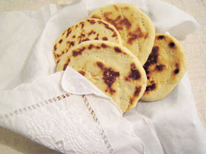

Arepitas andinas

La Arepa Andina es un tipo de arepa parecido a un pan,
de forma redondeada y plana como las arepas de maíz,
cocinadas de igual forma, pero con la textura de un pan.
Generalmente se come con mantequilla y queso blanco para el desayuno,
o como merienda acompañada de café con leche.
Ingredientes
1/2 Kg de harina de trigo
1 cucharadita de polvo de hornear
2 cucharadas de azúcar, si se quiere un poco más dulce se agrega más.
2 cucharadas de mantequilla
Leche líquida tibia, la necesaria para amasar
Preparación
- Colocar la harina con el polvo de hornear en un bol junto con la sal y el azúcar, mezclar.
- Hacer un hueco en el centro y añadir la mantequilla ablandada con el huevo.
- Mezclar bien hasta que no queden grumos de mantequilla.
- Amasar muy bien la masa hasta que este suave.
- Dejar reposar por aproximadamente una hora, a temperatura ambiente.
- Hacer un “rollo” con la masa y se cortan rodajas.
- Dar forma circular a las porciones de masa aplastándolas para hacer las arepas,
llevándolas a un espesor de un centímetro aproximadamente o más delgadas si lo desean.
- Hacer las arepas y las mismas se deben trinchar (puyar) con un tenedor para dejar que salga el aire y no se inflen demasiado.
- Calentar un budare o plancha de cocina, luego de estar caliente,
se colocan las arepas en el budare y dorar por ambos lados.
- Colocar sobre un paño seco las arepas listas, se tapan dejándolas reposar hasta que estén tibias.
Menú